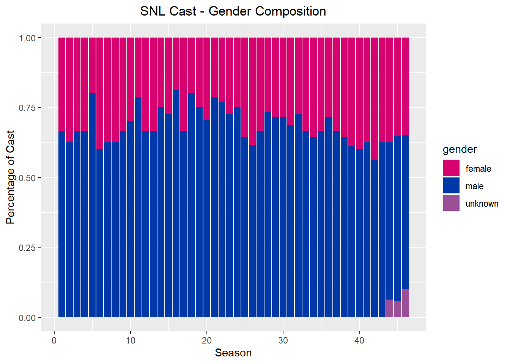
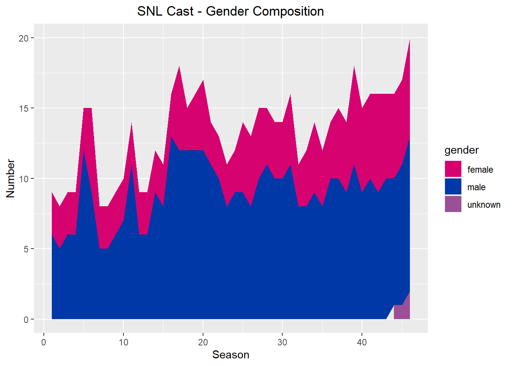
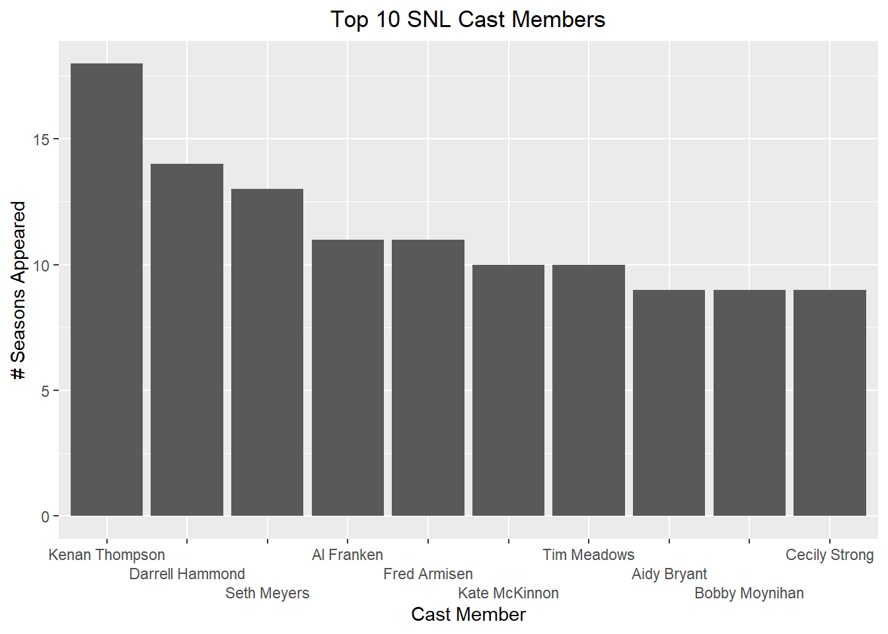

library(tidyverse)
library(ggplot2)
library(lubridate)
knitr::opts_chunk$set(echo = TRUE, warning=FALSE, message=FALSE)Homework 3
hw3
snl
Homework
Read in data
I decided to build off of my last challenge and use the SNL data sets.
library(readr)
casts <- read_csv("_data/snl_casts.csv", show_col_types = FALSE)
actors <- read_csv("_data/snl_actors.csv", show_col_types = FALSE)
seasons <- read_csv("_data/snl_seasons.csv", show_col_types = FALSE)Briefly describe the data
Each data set contains different information about the show Saturday Night Live. “Actors” and “Casts” share the column “aid”, the names of actors who have appeared on the show. “Casts” and “Seasons” share the column “sid” or “season id”, the season number. I will be joining all three sets based on these shaerd variables.
Tidy Data (as needed)
I’m going to join to do an inner join, which I think is the best choice because it will remove excess data. Then I will filter out columns that don’t seem useful to me.
#join data sets
snl <- inner_join(actors, casts, "aid")
snl <- inner_join(snl, seasons, "sid")
#remove excess columns
snl <- snl %>%
select(-first_epid.x, -last_epid.x, -url, -type, -n_episodes.y, -year, -last_epid.y)
#mutate date
snl <- snl %>%
mutate(first_epid.y = ymd(first_epid.y))
snl# A tibble: 614 × 8
aid gender sid featured update_anchor n_epis…¹ seaso…² first_ep…³
<chr> <chr> <dbl> <lgl> <lgl> <dbl> <dbl> <date>
1 Kate McKinnon female 37 TRUE FALSE 5 0.227 2011-09-24
2 Kate McKinnon female 38 TRUE FALSE 21 1 2012-09-15
3 Kate McKinnon female 39 FALSE FALSE 21 1 2013-09-28
4 Kate McKinnon female 40 FALSE FALSE 21 1 2014-09-27
5 Kate McKinnon female 41 FALSE FALSE 21 1 2015-10-03
6 Kate McKinnon female 42 FALSE FALSE 21 1 2016-10-01
7 Kate McKinnon female 43 FALSE FALSE 21 1 2017-09-30
8 Kate McKinnon female 44 FALSE FALSE 21 1 2018-09-29
9 Kate McKinnon female 45 FALSE FALSE 18 1 2019-09-28
10 Kate McKinnon female 46 FALSE FALSE 17 1 2020-10-03
# … with 604 more rows, and abbreviated variable names ¹n_episodes.x,
# ²season_fraction, ³first_epid.y
# ℹ Use `print(n = ...)` to see more rowsData Frame Summary
print(summarytools::dfSummary(snl,
varnumbers = FALSE,
plain.ascii = FALSE,
style = "grid",
graph.magnif = 0.70,
valid.col = FALSE),
method = 'render',
table.classes = 'table-condensed')Data Frame Summary
snl
Dimensions: 614 x 8Duplicates: 0
| Variable | Stats / Values | Freqs (% of Valid) | Graph | Missing | |||||||||||||||||||||||||||||||||||||||||||||||||||||||
|---|---|---|---|---|---|---|---|---|---|---|---|---|---|---|---|---|---|---|---|---|---|---|---|---|---|---|---|---|---|---|---|---|---|---|---|---|---|---|---|---|---|---|---|---|---|---|---|---|---|---|---|---|---|---|---|---|---|---|---|
| aid [character] |
|
|
 |
0 (0.0%) | |||||||||||||||||||||||||||||||||||||||||||||||||||||||
| gender [character] |
|
|
 |
0 (0.0%) | |||||||||||||||||||||||||||||||||||||||||||||||||||||||
| sid [numeric] |
|
46 distinct values |  |
0 (0.0%) | |||||||||||||||||||||||||||||||||||||||||||||||||||||||
| featured [logical] |
|
|
 |
0 (0.0%) | |||||||||||||||||||||||||||||||||||||||||||||||||||||||
| update_anchor [logical] |
|
|
 |
0 (0.0%) | |||||||||||||||||||||||||||||||||||||||||||||||||||||||
| n_episodes.x [numeric] |
|
22 distinct values |  |
0 (0.0%) | |||||||||||||||||||||||||||||||||||||||||||||||||||||||
| season_fraction [numeric] |
|
36 distinct values |  |
0 (0.0%) | |||||||||||||||||||||||||||||||||||||||||||||||||||||||
| first_epid.y [Date] |
|
46 distinct values |  |
0 (0.0%) |
Generated by summarytools 1.0.1 (R version 4.2.1)
2022-08-28
Descriptive Stats & Vizualizations
The first thing I decided to investigate was the gender composition of each season. I decided to make a new data frame which will calculate the percentage of each gender on each season, then illustrate this using a stacked bar chart.
gender_by_season <- snl %>%
group_by(sid) %>%
count(gender) %>%
summarize(percent = n/sum(n),
gender = gender,
.groups = 'drop')
gender_by_season# A tibble: 95 × 3
sid percent gender
<dbl> <dbl> <chr>
1 1 0.333 female
2 1 0.667 male
3 2 0.375 female
4 2 0.625 male
5 3 0.333 female
6 3 0.667 male
7 4 0.333 female
8 4 0.667 male
9 5 0.2 female
10 5 0.8 male
# … with 85 more rows
# ℹ Use `print(n = ...)` to see more rows#Stacked Bar Chart
ggplot(gender_by_season, aes(fill=gender, y=percent, x=sid)) +
geom_bar(position = "fill", stat = "identity")+
labs(x ="Season", y="Percentage of Cast",
title = "SNL Cast - Gender Composition")+
theme(plot.title = element_text(hjust = 0.5),
plot.subtitle = element_text(hjust = 0.5))+
scale_fill_manual(values = c("#D60270", "#0038A8", "#9B4F96"))
The variables in this visualization include gender and season. We can see that the ratio of men to women has become closer to even over the years, but not dramatically. This is also skewed by the increase in people whose gender is marked unknown- it is unclear if this is due to incomplete data or if the data failed to include other gender identities.
Alternatively, we can represent this as an area chart:
gender_by_season2 <- snl %>%
group_by(sid) %>%
count(gender)
ggplot(gender_by_season2, aes(x=sid, y=n, fill=gender)) +
geom_area()+
labs(x ="Season", y="Number",
title = "SNL Cast - Gender Composition")+
theme(plot.title = element_text(hjust = 0.5),
plot.subtitle = element_text(hjust = 0.5))+
scale_fill_manual(values = c("#D60270", "#0038A8", "#9B4F96"))
I also thought it would be interesting to compare cast members by the amount of time they spent on the show. Since the first episode and last episode data is incomplete, I chose to use season numbers. I will also only be comparing the top 10 cast members, since there are 156 in this data set.
longest_cast <- snl %>%
group_by(aid) %>%
summarize(seasons_appeared = n()) %>%
arrange(desc(seasons_appeared)) %>%
slice(1:10)
ggplot(longest_cast, aes(x = reorder(aid, -seasons_appeared), y = seasons_appeared))+
geom_bar(stat = "identity")+
labs(x ="Cast Member", y="# Seasons Appeared",
title = "Top 10 SNL Cast Members")+
theme(plot.title = element_text(hjust = 0.5),
plot.subtitle = element_text(hjust = 0.5))+
scale_x_discrete(guide = guide_axis(n.dodge=3)) #fix overlapping labels
This bar chart is limited in that it only represents a small group of cast members. I was also unable to figure out how to plot the average number of seasons for all cast members on the chart, which I think would have better demonstrated the significance of these cast members’ tenure. While we can see that the top 10 are mostly men and the top 5 are exclusively men, it would be interesting to compare the tenure of male and female cast members.